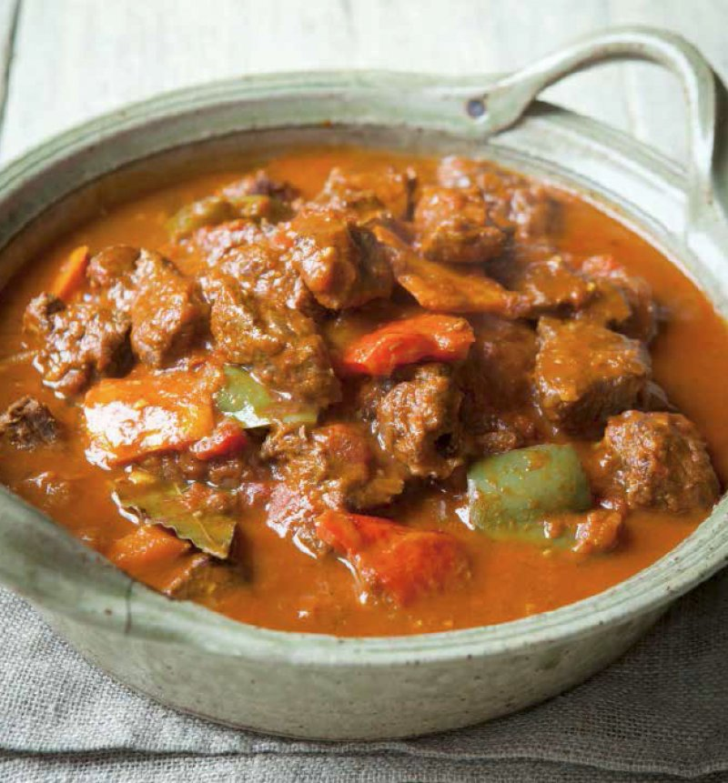

Hairy Bikers' Goulash
Serves 6, prep and cook time 3 hours

Ingredients
- 1kg braising steak
- sunflower oil
- 3 medium onions, cut into 12 wedges
- 3 garlic cloves, crushed
- 400g can of chopped tomatoes
- 1 tbsp paprika
- 2 tsp hot smoked paprika
- 3 colourful peppers
- 1 beef stock cube
- 400g can of chopped tomatoes
- 2 bay leavess
Method
- Preheat the oven to 170°C/Fan 150°C/Gas 3½. Trim any hard fat off the beef and cut the meat into rough 4cm chunks. Season well with salt and freshly ground black pepper.
- Heat the oil in a large flameproof casserole dish. Add the steak and fry over a high heat until nicely browned all over, turning regularly. Tip the onions into the pan and cook with the beef for 5 minutes until softened. Add the crushed garlic and cook for a further minute, stirring regularly.
- Sprinkle both paprikas over the meat and crumble the beef stock cube on top. Add the water, tomatoes, tomato purée and bay leaves. Season with salt and pepper, stir well and bring to a simmer. Cover with a tightly fitting lid and transfer the dish to the oven. Cook for 1½ hours.
- While the beef is cooking, remove the core and seeds from each pepper and chuck them away. Cut each pepper into chunks of about 3cm. When the beef has cooked for 1½ hours, carefully remove the dish from the oven. Stir in the peppers, put the lid back on and put the goulash back in the oven for a further hour or until the beef is meltingly tender
- Serve with small portions of rice (see pages 178–179) and spoonfuls of soured cream if you like, but don’t be too generous – soured cream contains less fat than double cream but still has 30 calories per tablespoon!
Back to recipes